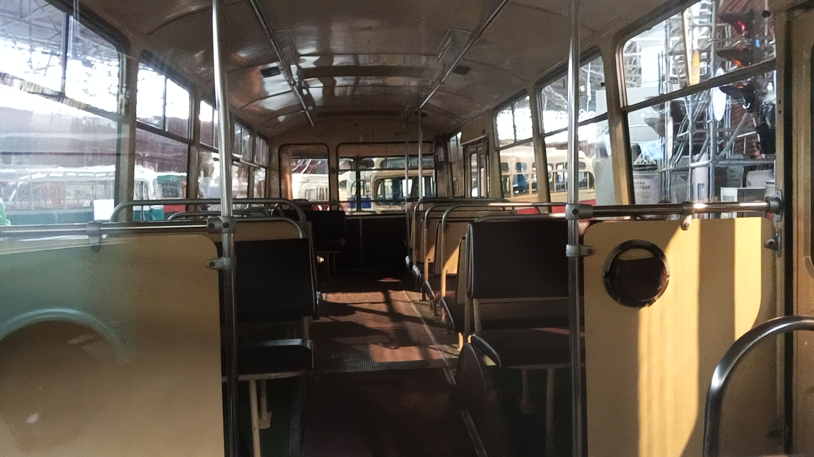
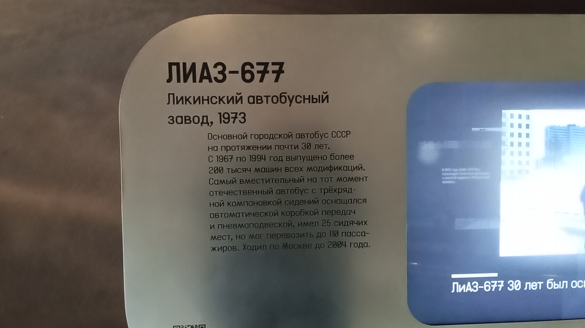

ЛиАЗ-677
ЛиАЗ-677 — советский и российский городской высокопольный автобус большого класса, выпускавшийся Ликинским автобусным заводом с 1967 по 1994 год. Самый массовый автобус в истории СССР.
Стал первым советским серийным автобусом с гидромеханической автоматической коробкой передач и пневматической подвеской. За характерный внешний вид и мягкий ход получил в народе прозвище «Луноход».
Общая информация
🏭 Производство
Завод-изготовитель: Ликинский автобусный завод (ЛиАЗ), Ликино-Дулёво
Годы выпуска: 1967–1994 (на ЛиАЗе), до 2000-х на сторонних заводах
Всего выпущено: ~200 000 всех модификаций
Экспорт: 7 133 в 16 стран (3 308 — в ГДР)
📍 Эксплуатация
Основной регион: все города СССР
Прозвища: «Луноход», «Скотовоз»
Преемник: ЛиАЗ-5256
Последний рейс в Москве: 2009 год
⭐ Революция на колёсах: ЛиАЗ-677 стал первым советским серийным автобусом с автоматической коробкой передач и пневмоподвеской. Водители впервые получили гидроусилитель руля и селектор автомата вместо тяжёлого сцепления и несинхронизированной КПП. В салоне — широкая накопительная площадка в задней части и 110 пассажиров общей вместимости.
Технические характеристики
Основные параметры
Длина: 10,565 м
Ширина: 2,5 м
Высота: 3,033 м
Сухая масса: 8363 кг
Вместимость: 110 человек (25 сидячих)
Максимальная скорость: 70 км/ч
Силовая установка
Двигатель: ЗИЛ-375Я7 (ЗИЛ-509.10-401)
Тип: бензиновый, V8, карбюраторный
Объём: 7,0 л
Мощность: 175–180 л.с.
Расход топлива: до 50 л/100 км
КПП: 2-ступенчатая автоматическая (ГМП-2 «Львов»)
История
Разработка
Проектирование ЛиАЗ-677 началось в 1960 году. Конструкция собиралась из максимального количества сторонних разработок: пневматическую подвеску обкатали ещё в 1960 году на опытной модели ЗИЛ-158Д, а автоматическую коробку передач НАМИ-035 разработали по заказу Львовского автобусного завода. Первый прототип нового автобуса был готов 6 ноября 1962 года.
Первые партии
Первые товарные автобусы были переданы на реализацию только в 1965 году. В 1967 году начался выпуск опытных партий, а первая промышленная партия в количестве 11 штук была собрана в 1967-м. С весны 1968 года началось серийное производство.
Полное вытеснение ЗИЛ-158
Развернуть полноценный выпуск и начать массовые поставки в парки новых ЛиАЗов удалось только в 1969 году. В 1970 году производство полностью переключили с ЛиАЗ-158 на ЛиАЗ-677. С этого момента начались массовые поставки.
Золотая медаль в Лейпциге
На Лейпцигской ярмарке 1972 года ЛиАЗ-677 получил золотую медаль. Это признание международного уровня подчёркивало передовой характер конструкции для своего времени.
Модернизация — ЛиАЗ-677М
Единственная крупная переработка за время производства произошла в 1978 году. Автобусы, выпускавшиеся с этого момента, получили обозначение ЛиАЗ-677М (М — модернизированный). Были улучшены многие узлы: новый тахометр, переработанная коробка передач, улучшенная тормозная система.
Доработки и модификации
В 1980-х годах вносились дополнительные изменения. Изменили расположение фонарей спереди и сзади, добавили вентиляционные люки в крыше. В 1986 году переработали интерьер, установили более удобные сиденья. Выпускались модификации: ЛиАЗ-677Б (пригородный), ЛиАЗ-677МС (северный), ЛиАЗ-677Г (газобаллонный).
Закат производства
Последний ЛиАЗ-677М сошёл с конвейера Ликинского завода 7 августа 1994 года. После этого выпуск продолжили ремонтные предприятия в Яхроме, Орехово-Зуеве и Рыбинске — из машино-комплектов, вплоть до начала 2000-х. В Санкт-Петербурге последние ЛиАЗ-677 вывели из пассажирской эксплуатации в 2006 году, в Москве — в 2009-м.
Интересный факт: ЛиАЗ-677 — единственный советский автобус с автоматической коробкой передач, производившейся во Львове. Селектор на руле имел положения А (автомат), Н (нейтраль), ЗХ (задний ход) и ПП (принудительная первая передача) — её рекомендовали включать на затяжных подъёмах. За огромный расход топлива (до 50–55 л/100 км) и особенности планировки салона автобус получил в народе прозвище «Скотовоз», а за мягкий ход на пневмоподвеске — «Луноход».
Особенности конструкции
Автоматическая КПП
ЛиАЗ-677 стал первым советским серийным автобусом с гидромеханической автоматической коробкой передач (ГМП-2 «Львов»). Водители впервые избавились от необходимости выжимать тяжёлое сцепление и переключать несинхронизированную коробку. Селектор на руле — А, Н, ЗХ и ПП.
Пневмоподвеска
Пневматическая подвеска с регулятором высоты кузова — новинка для советских автобусов. Обеспечивала мягкий, комфортный ход независимо от загрузки. Водители ценили её, но при выходе из строя баллонов автобус раскачивался или кренился на сторону.
Планировка салона
Трёхрядная компоновка сидений слева (по одному) дала широкий проход по центру. Пониженная задняя часть автобуса была полностью лишена сидячих мест — там разместилась вместительная накопительная площадка. Это позволяло перевозить 110 человек.
Проблемы и недостатки
Двигатель ЗИЛ-375Я7 — гражданская версия мотора от армейского Урал-375 — был мощным и надёжным, но чудовищно прожорливым: даже по заводским нормам до 50 л/100 км. Двигатель располагался справа от водителя, создавая шум и загазованность в кабине. В горных и жарких регионах автобус не прижился.
🎉 Символ эпохи: ЛиАЗ-677 — самый узнаваемый советский автобус 1970–1980-х годов. Он был основой автобусных парков практически всех городов СССР. В 2022 году Музей транспорта Москвы перезапустил проект «Привет, Москва!», героем которого стал ЛиАЗ-677М — ретроавтобус путешествует по районам города, становясь центром притяжения.
Фотогалерея

📸 pfandrom

📸 pfandrom

📸 pfandrom
Нажмите на фото для увеличения
«Водителей в первую очередь радовал принципиально иной уровень комфорта на рабочем месте. Руль — с гидроусилителем! И, конечно, коробка-автомат. Больше не требовалось сотни раз за смену выжимать тяжёлое сцепление и переключать неподатливый рычаг в несинхронизированной коробке».